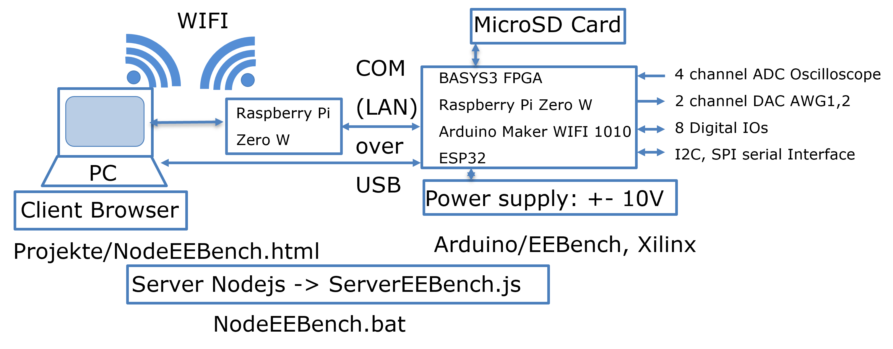

NodeEEBench PlatformJörg Vollrath, University of Applied Science Kempten, Germany, Joerg.vollrath@hs-kempten.deApril, 2024 Overview Figure 1: Overview of the system The system provides an oscilloscope, arbitrary waveform generator (AWG), power supply and digital IOs with a browser interface on different hardware platforms using JavaScript and NodeJS. It is low cost, open source and runs with minimum installation in a browser. It supports simulation, different hardware platforms and configurations. Figure 1 shows on the left the PC or laptop running a nodeJS server and having a browser interface for operation. A tablet or mobile device could also connect to a raspberry Pi running the nodejs server providing the web interface. The nodeJS server communicates via a serial interface to a BASYS3 FPGA or Arduino based system. These provide the hardware resources for the oscilloscope, function (arbitrary waveform) generator, power supply and digital IOs. Attaching data converter modules (PMOD) via I2C or SPI interface is supported. It is possible to configure performance and cost of the whole system. Other Arduino compatible boards can be used, if the used pins are adjusted accordingly.
Figure 2 shows the software components and the interfaces of the system. Due to the limitations of the FPGA command processing simple text strings starting with a character and having hexadecimal numbers are used for communication (interfaces). The available text strings are listed at the configuration tab of the web interface and can be observed in the nodejs server window for debugging. The html file includes some JavaScript helper libraries, has html sections for the tabs and then JavaScript code for the tabs and for communication.
Disable the Vivado programming server before starting nodejs server. DocumentationPlatform (This file)HTML File NEEBench.html Installation INLDNLMeasurement Github DigitalIO BASYS3 BASYS3 Ramp BASYS3 Lookup AWG OSC FFT Timing Research Summary To Do List
|


Table
| Feature Link | Date last modification | Simulator Server | BASYS3 | Arduino MKR WIFI1010 | Raspi Zero W | XMC4700 Relax Kit | NUCLEO-F302R8 STMicroelectronics |
MSP-EXP430F5529LP Texas Instruments |
| Cost | 140.- | 34.- (04/2024) | 38.- (04/2024) | 15.-/33.- (04/2024) | 10.- (04/2024) | 16.- (04/2024) | ||
| Motivation | Low Cost FPGA | Arduino IDE First semester programming |
Simulate LAN connection with server | Trade Fair Arduino IDE Germany based | Low cost motor control board | Control system and microprocessor laboratory | ||
| BLDC Motor Kit | BLDC-SHIELD_IFX007T | X-NUCLEO-IHM07M1 | ||||||
| Cost | 40.- (04/2024) | 15.- (04/2024) | ||||||
| Base Program Analog Read ADC, OSC 4 channel Analog Write DAC, AWG1 | VHDL | Arduino IDE | (Node.js) | Arduino IDE | Arduino IDE | Arduino IDE | ||
| Sampling rate, Bandwidth, Resolution | DAC 100MSps, 10ns, 16 Bit ADC 128kSps |
DAC = ADC 1kSps, 12 Bit | ||||||
| Sample buffer | 8k | 512 | ||||||
| Read lookup buffer | 2k | |||||||
| Write lookup buffer | TBD | |||||||
| SPI (single/multiple) | TBD | |||||||
| I2C (single/multiple) | TBD | |||||||
| Digital signal processing | TBD | |||||||
| Digital IO | TBD | |||||||
| Power supply | TBD | |||||||
| AWG output buffer hardware | TBD | |||||||
| ADC, DAC Hardware | TBD | PMOD AD2 20.- PMOD DA2 21.- | ||||||
| Oscilloscope input buffer hardware | TBD | |||||||
| Server Node.js | ||||||||
| Server Node.js | ServerEEBench.js | ServerEEBench.js ServerAx.js |
||||||
| UART auto detect | yes | yes | ||||||
| Program version and hardware auto detect | yes | yes | ||||||
| HTML | ||||||||
| Configuration | ||||||||
| AWG1 | ||||||||
| AWG2 | TBD | |||||||
| Oscilloscope | ||||||||
| Cursor | ||||||||
| Math function | ||||||||
| FFT | ||||||||
| Histogram | ||||||||
| Ramp Test INL, DNL | ||||||||
| Write Lookup | ||||||||
| Read Lookup | ||||||||
| Power supply | ||||||||
| Digital IO | ||||||||
| Bode Plot | ||||||||
| Application | Diode MOSFET Opamp Band pass ADC DAC Source MOTOR Solar cell Audio Amp |
|||||||
| DSP Application |
||||||||
Issues
- Issue 1
Test
For each Board: FPGA, Arduino
AWG: DC, Sine, triangle, Step, frequency 1Hz 100Hz 1 kHz, 10 kHz
FFT, Ramp, lookup
To Do
- MAX5216PMB 21.- DAC 16-Bit 14us 50kSps
- MAX11205PMB 50.- 16-Bit 80ms
- Design power supply (USB-C) -10 V, +10 V
- Design OSC Input buffer -10 V, +10 V
- Design AWG Ouput buffer -10 V, +10 V
- Limit, report, try out: valid frequency and voltage range
- Data acquisition:
- Fast with trigger and complete display update
- Slow point update
- Server, Client code change
- AWG Sine signal step below 500 Hz fixed to 65536
- Try out code based FFT and ramp
- Implement DAC INL, DNL ramp test
- Prepare for system configuration BASYS3, Arduino MKR WIFI1010 , Raspberry Pi W Zero
Batch file, system object (NEEBench.html), control and acquisition of Arduino - Implement DAC Histogram with lookup table 256/4096
- Implement Pmod DA2 DAC at JA
- Implement 16 Bit Digital IO for JB, JC with vector and graphical user interface
- Check hardware Sine implementation, since time range larger than 1ms/div gives bleeding FFT curve